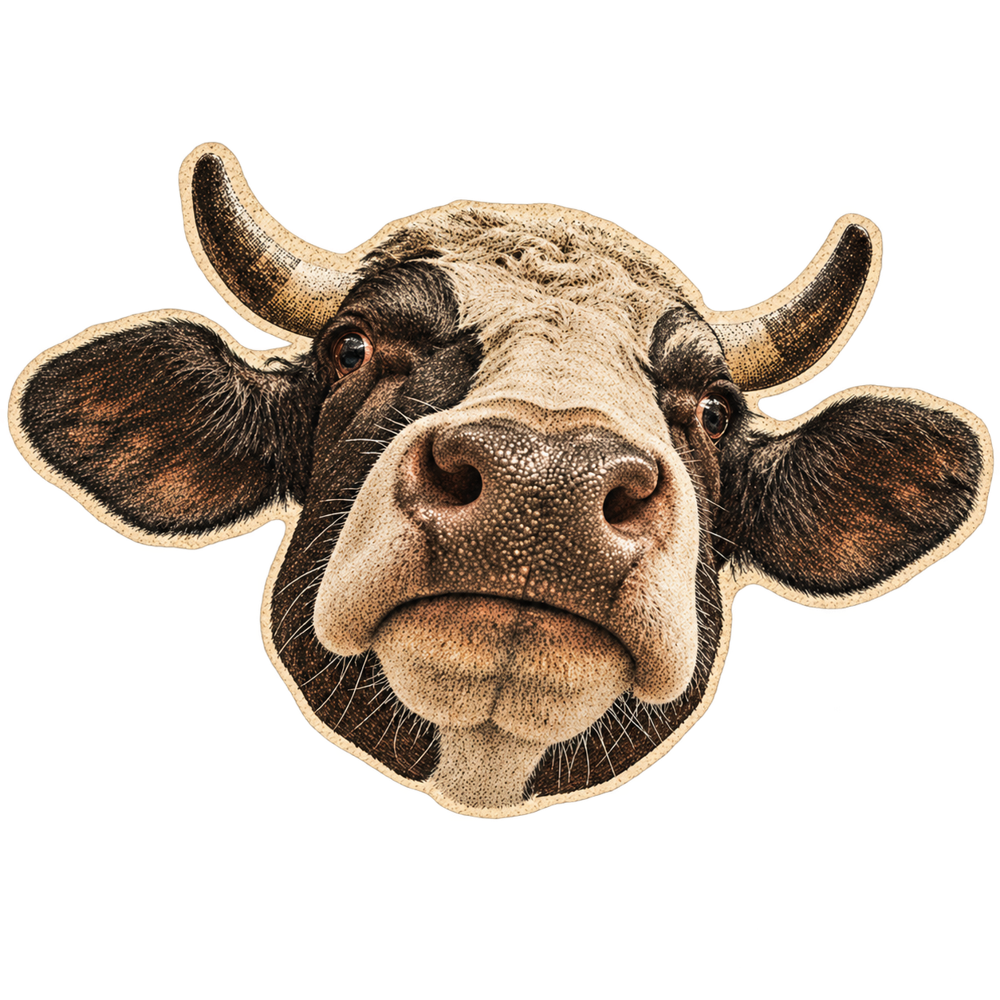
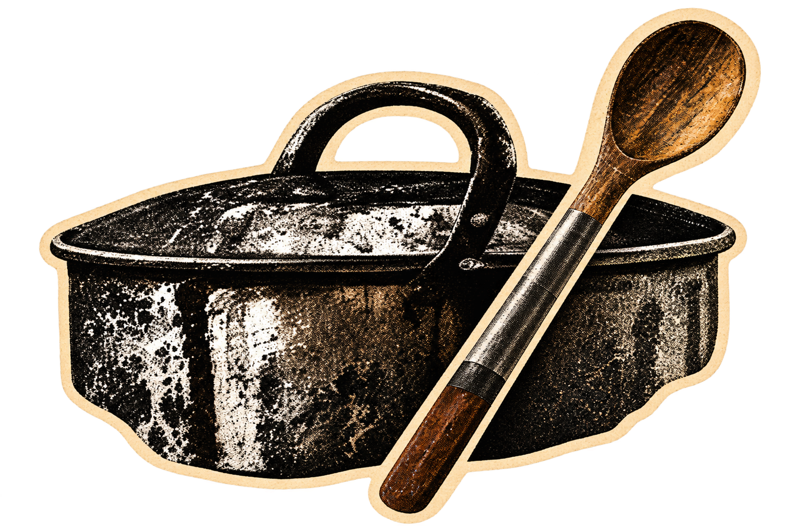
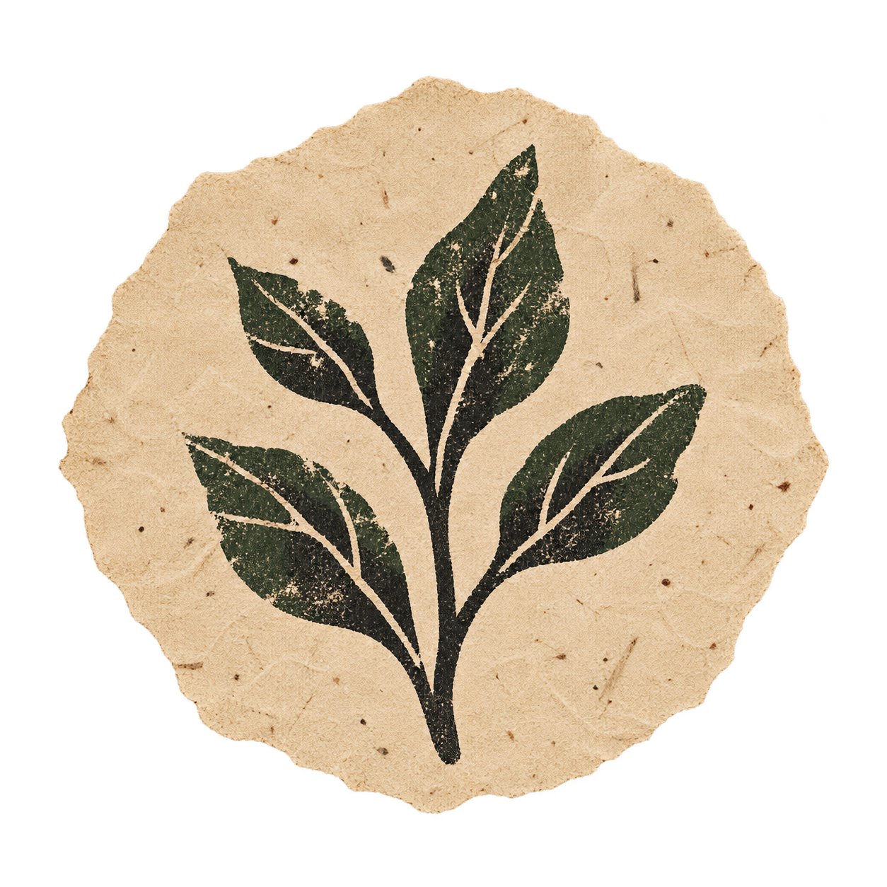
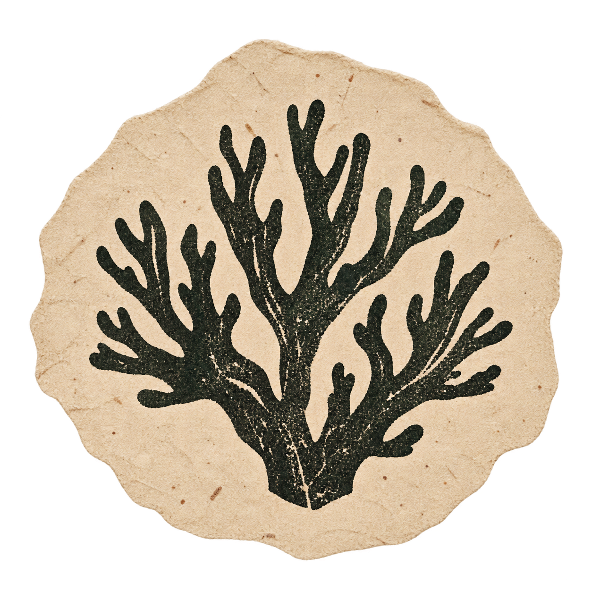
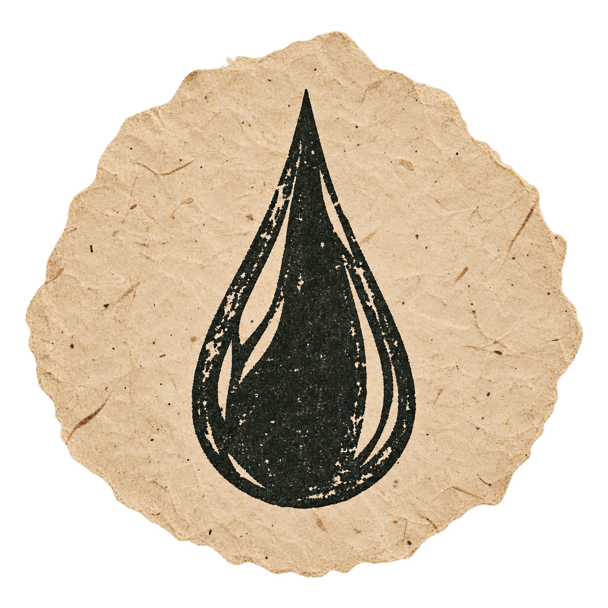

La Gruta · Compañía de Artistas
Una nueva obra de La Gruta.

¡Estamos haciendouna vaca!
Aporta aquí
Creaciones
Investigaciones
Pedagogías¿Qué es
La Gruta?
Somos una compañía de artistas que entrelaza creaciones, investigaciones y pedagogías desde el cuerpo, la voz y el pensamiento.
Un espacio para desarrollar preguntas, compartir herramientas y construir en comunidad. Nos interesa cultivar un sentido libre contra un sentido común y hacer de la práctica artística una forma de encuentro y conocimiento.
Creamos, acompañamos, atravesamos y estudiamos.